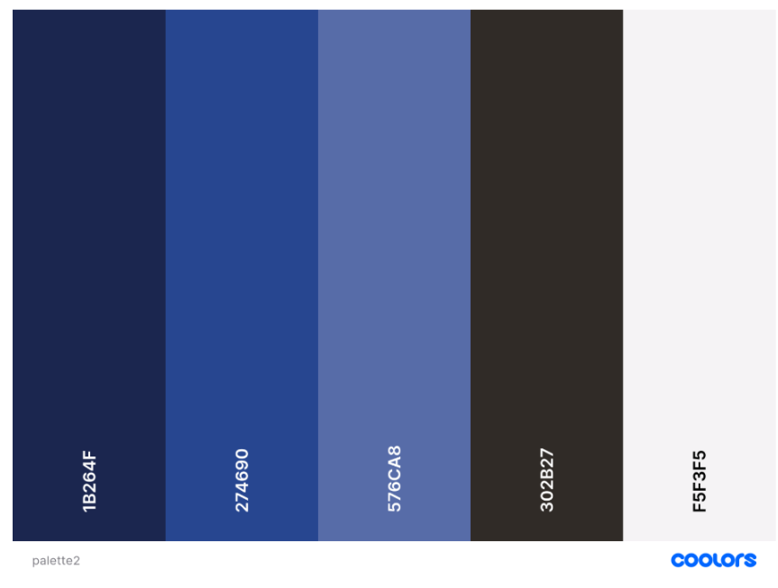

UI/UX Branding: ContentTattva
This article covers the UX research for redesigning a company's homepage and then making an interactive prototype for it.
- Outdated website with content
- Not mobile responsive
- Used placeholder content
- Misaligned company values through brand identity
Pain Points
- Conducted market research to see similar firms made their sites
- Update brand identity with colors, typography and logo
- Delivered a high-fidelity prototype made in Figma
- Collaborated with Wordpress developer to translate their prototype into a functional site
Solution
Design Process
Define
In the first meeting, the company founders and I discussed the main pillars for the site.- Identity
- Customer Satisfaction
- Efficiency
Discover
This was the UX period for the site as I had archived all the websites content to learn about them. Then, I conducted market research to analyze the homepages of other firms and find some common functionalities. Some of the features include:
- FAQ page to answer potential questions
- Good color scheme to reflect company values
- Single page design
- Use of collapsible menus
This helped me discover the clear definitions of such sites and how to make it easier for clients to content them.
Analysis and Planning
I had written additional content to tailor with the firm's vision. Additionally, I had made a sitemap and based on that, I had designed wireframes for the site.
Design
Linked my Figma page here to reflect the work. I had also a designed a logo for the brand that they loved it so much, that they adopted it.

Color Scheme
- Peace
- Trust
- Modern
Testing
I had conducted several user testing keeping track of user's feedback and make any necessary changes. I had shared a Google Form to record those data.
Outcome
Delivered a high-fi prototype to the client and then collaborated with a developer to translate it into a website.